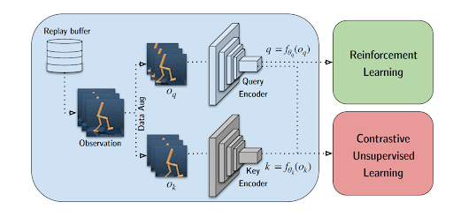
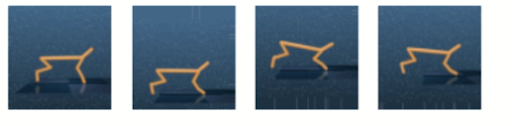
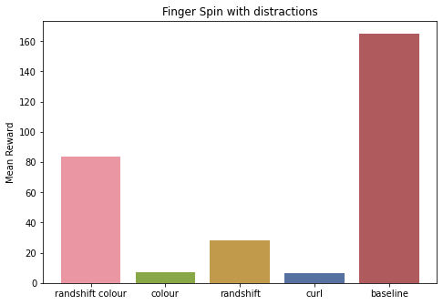

Introduction
Deep Reinforcement learning agents take a lot of interactions for training directly on high-dimensional inputs such as images. This could be time-consuming and/or infeasible if we were to train directly in the real world. Training in a simulator is faster and safer than real-world training. Simulators such as NVIDIA Isaac SIM can now render realistic scenes. 1 It would still be ideal to have sample efficient agents that don’t require millions of environment interactions for relatively simple tasks.
In this work, we experiment with further improving the sample efficiency of the MbRL approach, “Dreamer” with data augmentation and SSL. We find that data augmentation can aid sample efficiency. Our code is available here.
TLDR; Poster of the project.
Related Work
Model-Based RL from pixels
Model-based reinforcement learning (MbRL) comes with a promise of sample efficiency. In MbRL, we learn a model of the environment where given the current state and action, our model learns to predict the future, i.e. the next state and reward. If we learn good-enough models of the world, we can use that to directly plan actions that maximize future rewards by simulating the actions using the model and picking the action that leads to the best return (model predictive control) or even learn agents by sampling from the model instead of interacting with the actual environment. And learning models are arguably more suited to the capabilities of neural networks compared to learning the policy or value function as it is a supervised learning problem.
In 2019-2021, a series of works authored by Danijar Hafner demonstrated that MbRL can be applied directly on pixel inputs and reach good performance and sample efficiency. They evaluated their approach on environments such as Atari for discrete action spaces and dmcontrol for continuous control.
PlaNET
In the first work, PlaNet (Hafner et al. 2019), the authors came up with an effective way to learn a latent forward dynamics model for pixel observations. This “world model” allows one to directly plan in latent space. In PlaNet, they used Model Predictive Control (MPC) to obtain a policy directly from the learnt model.

Dreamer
In the next work, Dreamer (Hafner et al. 2020), they replaced the MPC policy with a learnt policy. They learnt an actor-critic agent directly on the rollouts sampled from the model (or the “dreams of the model”) instead of the real environment. Since the learnt model is differentiable, they could improve the policy directly without using high-variance policy gradient estimates.
For a summary of these approaches, take a look at the following blog posts PlaNet, Dreamer v1, and Dreamer v2.
Model-free RL from pixels
Concurrently, there was a race to bring sample efficiency to model-free approaches. Works such as CURL (Srinivas, Laskin, and Abbeel 2020), DRQv2 (Yarats et al. 2021), RAD (Laskin et al. 2020) competed to achieve sample efficiency without learning a dynamics model.
These approaches fall under two broad categories.
- Data augmentation-only approach
- Data augmentation with Self-Supervised learning (SSL).

The first category of approaches applies data augmentation on the pixel observations leaving the optimized RL objective (or loss) unchanged.
In the second category of approaches, there is a self-supervised Auxillary loss added to the RL objective. While the data-augmentation-only approach improves sample efficiency, it relies only on the reward as a signal to train.
The second approach always adds the auxiliary self-supervised signal to train the pixel encoder (CNN). This could prove beneficial in the sparse reward setting where the reward is not a sufficient signal to train representation learning CNN. For a detailed comparison of these two approaches have a look at the BAIR blog.
Our Approach
We apply data augmentation and/or self-supervised learning (SSL) over Dreamer(v2). This could allow us to exploit the sample efficiency of both MbRL and augmentations/SSL. We also test whether data augmentation and/or self-supervised learning helps with robustness to changes in the image backgrounds.
Augmentations
In Dreamer, the world model is trained with batches consisting of episode fragments. For all our experiments, we apply the same augmentation to all the input images in an episode. This consistent augmentation avoids adding unrecoverable noise to the dynamics. For the reconstruction objective, we use the unaugmented images as the ground truth. This acts as additional regularization for learning the latent representations from pixels.
We have three main settings for our augmentations.
1. Colour
Here we apply various augmentations such as changes to contrast, sharpness and adding Colour jitter.
2. RandShift
Here, we pad the image with a 4-pixel border which mirrors the existing border and then crops the resulting image to the original image size at a random point. This surprisingly simple augmentation has proven effective for improving sample efficiency in model-free RL methods such as (Yarats et al. 2021).

3. CURL
In this setting, we follow CURL(Srinivas, Laskin, and Abbeel 2020) in obtaining larger images (84x84) from the environment and cropping them to our default setting (64x64). We add the self-supervised learning auxiliary loss to the output vectors from the observation encoder CNN in the Dreamer 2 world model.
DMControl100k Benchmark
We experiment on the Cheetah, Finger Spin, and Ball Cup Catch environments in the DMControl suite. We choose these environments as they’re widely used in model-free RL papers for establishing sample efficiency. We also fix the total number of real environment steps to 100,000 (100k).
Distracting Control Suite
Stone et al. (2021) introduces the Distracting Control benchmark. They extend DM Control by introducing visual distractions. These distractions create variations in background, colour, and camera pose. We are interested in measuring the robustness against the distractors introduced by our new training regime with augmentation. Hence, we only use distracting control environments for testing our trained agents. Due to the limited computational resources, we are able to only compare the vanilla dreamer 2 agent with the agents trained on augmented inputs. We do not test the model-free baselines on these approaches.

Results
DmControl 100k
We use the results reported by CURL (Srinivas, Laskin, and Abbeel 2020), DrQv2 (Yarats et al. 2021) 2, and RAD (Laskin et al. 2020) as external baselines. We run three seeds of torch implementation of Dreamer v2 as our internal baseline. We build our augmentations upon this dreamer implementation, resulting in the following three experimental settings.
- Colour augmentation (Dreamer +Colour)
- RandShift augmentation (Dreamer +RandShift)
- Colour and RandShift (Dreamer2 +RandShift +Colour)
- CURL (Dreamer2 +CURL)
| Environment | CURL | DrQv2 | RAD | Dreamer 2 | Dreamer 2 +Colour | Dreamer 2 +RandShift | Dreamer 2 +Colour +RandShift | Dreamer 2 +CURL |
|---|---|---|---|---|---|---|---|---|
| Cheetah, Run | 299 ± 48 | 272 ± 129 | 447 ± 88 | 377 ± 69 | 470 ± 38 | 463 ± 3 | 248 ± 226 | 227 ± 153 |
| Finger, Spin | 767 ± 56 | 352 ± 310 | 856 ± 73 | 668 ± 460 | 270 ± 99 | 376 ± 288 | 528 ± 207 | 679 ± 282 |
| Ball Cup, Catch | 769 ± 43 | 359 ± 244 | 840 ± 179 | 654 ± 567 | 939 ± 65 | 584 ± 507 | 245 ± 424 | 976 ± 21 |
We found batch size to be an important hyperparameter for sample efficiency for the dreamer. This is not surprising as we train the actor-critic policy with batch size number of imagined trajectories in each update. The increase in batch size alone made our vanilla dreamer baseline reach better or comparable scores to the model-free baselines. This highlights the importance of changing relevant hyperparameters for obtaining strong baselines. Which we found most model-free papers ignored, maybe due to the lack of time.
Our dreamer 2 + colour and dreamer 2 + CURL approaches out-perform model-free approaches on 2 out of 3 tested environments, namely “Cheetah, Run” and “Ball Cup, Catch. The colour augmentation has good gains to sample efficiency on both the tasks, even though Dreamer 2 +CURL is a bit ahead on”Ball Cup, Catch”. * “Finger, Spin” environment is challenging for the world model in all the settings requiring further investigation.
Distracting Control 100k
We compare the mean returns of the best agent for our dreamer 2 approaches. In each environment, we test the agent on the corresponding distracting control environment. In all the tasks there is a considerable drop in mean returns. This is expected as we only test in new environments.
In “Cheetah, Run” and “Cup, catch” tasks, Dreamer 2 with colour augmentation performs the best. But the “Finger, Spin” task again acts as a confounder, where the baseline performs better. It’s safe to say that more experiments with more environments are necessary.

Future Work
One good extension to our approach is to add self-supervised learning auxiliary losses to the latent state of the world model. Here, we might apply self-supervised losses on augmented trajectories for the same episode encoded into states by the world model. This would encourage the world model to encode different augmented trajectories to the same latent space. As a consequence, it might lead to the extraction of more informative latent variables. Another advantage of adding auxiliary self-supervision losses to latent states is that it could allow removing the costly reconstruction loss in dreamer 2. The self-supervision signal alone could drive learning good latent representations. There’s a question of whether we can replace reconstruction loss with self-supervised loss in a principled manner from the maximum likelihood formulation used by PlaNET (Hafner et al. (2019)).
Two straightforward SSL approaches are contrastive losses such as triplet loss or Contrastive Predictive coding on the latent states for the same episode with different augmentation. One challenge in contrastive learning-based SSL is obtaining negative samples. One can sample random latents from other trajectories or away from a window of a few time steps in the same trajectory. But it could end up being counter-productive as many observations that are in the same timesteps look similar and shouldn’t be considered as negative samples.
Instead one could also consider self-supervised losses which don’t require negative samples, such as the Barlow Twins (Zbontar et al. (2021)). 3
Conclusion
We find Dreamer MbRL approach to be more sample efficient when combined with the techniques such as data-augmentation and self-supervised learning. These techniques are commonly used to make model-free RL more sample efficient on pixel inputs, but seldom tested on MbRL. Our experiments were constrained by the computational budget available to us. Experiments in more environments can help strengthen our claim. Finally, we identify avenues for future work in applying self-supervised losses directly to the latent state representations.
Acknowledgements
This work was presented as a poster presentation at the Deep learning lab course, at the University of Freiburg. We thank Dennis Raith for supervising our project and Prof. Joschka Boedecker for his final feedback.
References
Footnotes
Despite the availability of faster simulators, we might still want to train directly in the real world. Check out this video clip with the argument made for it by Prof. Sergey Levine.↩︎
DrQv2 paper doesn’t report DmControl100k baseline. We extract the 100k benchmark results by parsing their results↩︎
Jie (2021) has done some experiments on using Barlow Twins on Dreamer.↩︎
Citation
@online{prasanna, karim farid, diego fernandez2022,
author = {Prasanna, Karim Farid, Diego Fernandez, Sai},
title = {Augmented {Dreams:} {Data} {Augmentation} \&
{Self-supervised} Learning with {Model-Based} {Reinforcement}
{Learning}},
date = {2022-10-23},
url = {saiprasanna.in/posts/2022-10-augmented-dreams},
langid = {en}
}